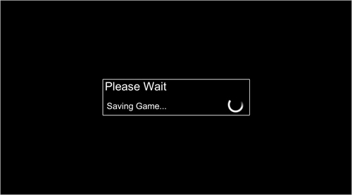
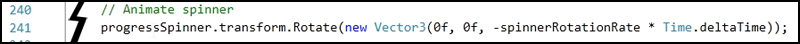

When the game is saved and loaded, a simple 2D UI is presented that blacks out the screen and shows an animated progress spinner with a message.
The existing UI is intentionally very basic. For your game, you can reuse the existing UI, or create something stylized and in line with your game's art direction. You can very easily customize the graphics present on the UI (change from basic black and white to something fancier), or change the layout entirely.
Depending on your specific game, you may want to replace the existing 2D UI "Saving..."/"Loading..." progress indicator with an in-game transition like an elevator, tram ride, ladder climb, etc. To do this, you will need to customize the state machine in the FPESaveLoadManager script in the Update() function.
Existing 2D UI spinner
You may want to make elevator geometry whiz by rather than spin a 2D spinner graphic. The high level states should remain the same, but the representation of those states can change according to your needs.